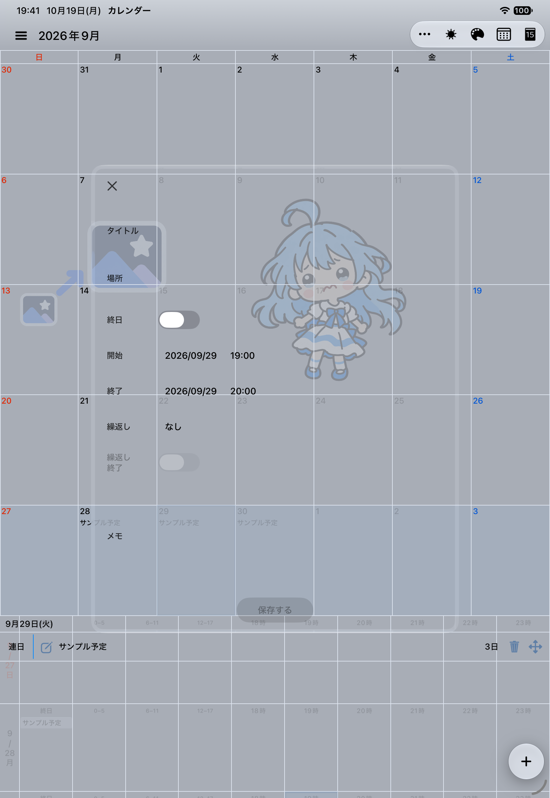
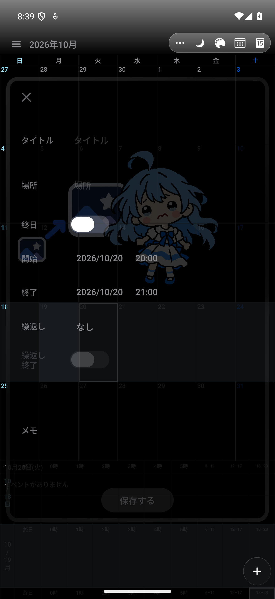

表示を切り替えながら予定を動かす
月表示で日付を探し、週表示で時間を選ぶ。移動待ちのカードや固定アイコンからドラッグし、時間帯の展開、確定、取消まで一続きの操作として扱います。
APPLICATION DEVELOPMENT / CASE STUDY
彩りカレンダーは、予定管理と見た目のカスタマイズを組み合わせたiOS・Androidアプリです。月と週を行き来し、予定をドラッグで移動しながら、背景画像や色、動きまで調整できます。
月表示で日付を探し、週表示で時間を選ぶ。移動待ちのカードや固定アイコンからドラッグし、時間帯の展開、確定、取消まで一続きの操作として扱います。
配色、背景画像、移動・回転・拡大縮小、透明感を調整。レイアウトを複製して編集し、独立プレビューでカレンダーの操作感を確認できます。
予定編集画面の例です。合成データだけを使った検証用画面で、個人の予定・写真は含めていません。端末サイズ・配色・選択日は異なります。


共有ロジックで日付や予定の状態を管理し、画面は各OSのUI技術で実装しています。見た目を揃えるだけでなく、保存、取消、復帰で同じ結果になることを重視しています。
| 層 | 担当する処理 |
|---|---|
| 共有ロジック | Kotlin Multiplatformによるカレンダーのモデル、状態、操作意図の管理。月・週・選択日の整合性を維持。 |
| iOS | SwiftUIとUIKitによる画面、スクロール、メニュー、キーボード対応。EventKitと連携。 |
| Android | Jetpack Composeによる画面とジェスチャー。Calendar Providerとの読み書き、権限やシステム画面への接続。 |
| 検証と配布 | 合成データを使うXCTest・Android計測テスト、画面と保存結果の確認、小さなコミット、署名済みビルドの配布。 |
固定アイコンからの直接ドラッグだけでなく、月から週への移動、時間帯の展開途中で指を離す操作、取消時の復帰を検証しました。ドラッグが始まっただけでは成功とせず、保存件数や元の予定が保たれることも確認しています。
iPadではメニュー外の日付タップが背後のカレンダーへ届くため、Androidタブレットのメニューも同じ操作結果になるよう修正。外側の追加ボタンから編集画面が一つだけ開くこと、取消、長押し、月送りも条件を分けて検証しました。
Androidの独立プレビューでは日付を選ぶと選択時刻が消え、新規予定が終日になっていました。iOSと通常画面の処理を照合し、選択した日の現在時刻から始まる動作へ統一。実際の日付タップ、編集開始、取消まで確認して配布しました。
iOSの現在の実装を確認してからAndroidを調整します。ビルド成功、操作成功、保存結果、画面の一致を別々に記録し、未確認の条件を完了扱いにしません。
再描画を待たずに入力した月送り試験や、メニュー消失をスクロールと取り違えた判定を修正しました。操作前の準備と途中状態の確認を加え、見かけの成功を除いています。
開発・検証はAIコーディング支援も利用して進めています。このページは実装と検証記録に基づく紹介であり、全画面・全端末でiOSとAndroidが完全に一致したことを示すものではありません。
月・週表示、予定編集、デザイン編集などの実装を土台に、操作と描画の差を継続改善しています。OS固有の素材・字体・権限画面、端末ごとの表示や複雑な繰り返し予定などは、確認範囲を明示しながら検証を続けます。